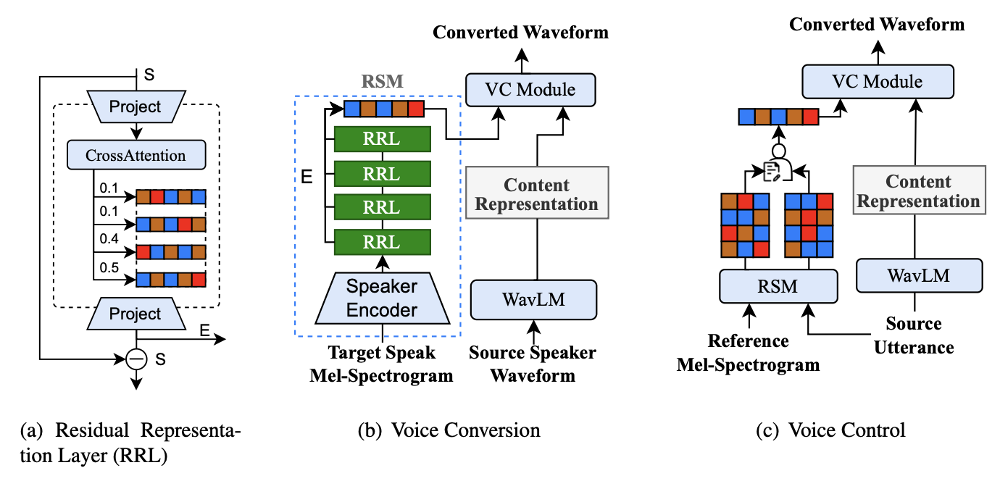

Abstract
Recently, there have been significant advancements in voice conversion, resulting in high-quality performance. However, there are still two critical challenges in this field. Firstly, current voice conversion methods have limited robustness when encountering unseen speakers. Secondly, they also have limited ability to control timbre representation. To address these challenges, this paper presents a novel approach leverages tokens of multi-layer residual approximations to enhance robustness when dealing with unseen speakers, called the residual speaker module. The introduction of multi-layer approximations facilitates the separation of information from the timbre, enabling effective control over timbre in voice conversion. The proposed method outperforms baselines in both subjective and objective evaluations, demonstrating superior performance and increased robustness.
Demo
todo...